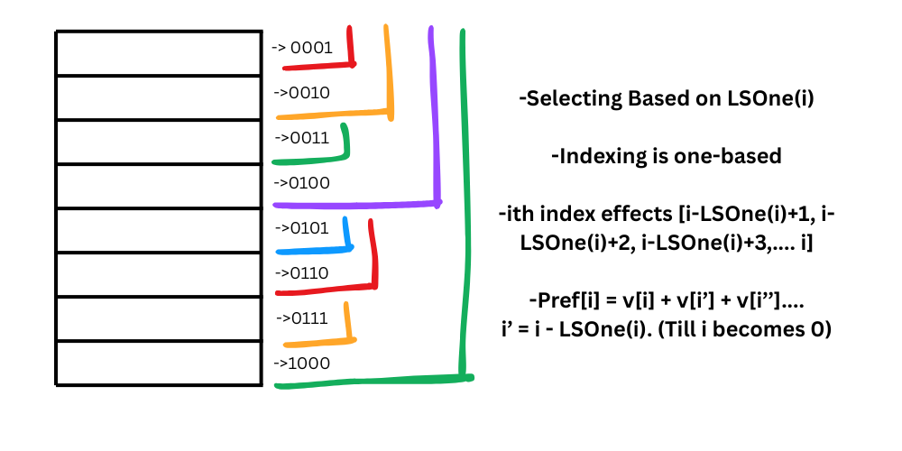

Fenwick Trees, also known as Binary Indexed Trees (BIT). Motivation for Fenwick Trees is to efficiently
calculate prefix sums when the array is updated frequently. Normal prefix sum:
prefix[i] = prefix[i-1] + a[i]
When a random element of array is updated, the prefix sum of all elements after that element also changes.
To update the prefix sum, we need to iterate through all elements after the updated element. This takes O(n) time.
Fenwick Trees allow us to update the prefix sum in O(log n) time.
In this section, LSOne is a function that returns the least significant set bit of a number. In previous sections. we have seen that LSOne of a number x is equal to (x & (-x)).
We generally use vectors to implement Fenwick Trees. Here are the necessary code to update and query the Fenwick Tree:
vector fenwickTree(n+1, 0); // n is the size of the array
// Update function
void update(int index, int value) {
while (index <= n) {
fenwickTree[index] += value;
index += (index & -index); // LSOne
}
}
// Query function
int query(int index) {
int sum = 0;
while (index > 0) {
sum += fenwickTree[index];
index -= (index & -index); // LSOne
}
return sum;
}